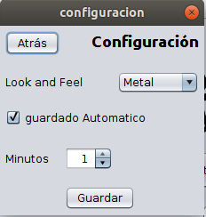

abre el menú de la aplicación, en el cual puedes ir a la configuración de la aplicación o cambiar el look&feel de la aplicación.
abre gestion de carreras en el cual puedes crear, borrar, modificar, iniciar carreras y añadir corredores a una carrera
abre la pantalla de Gestión de corredores en la que puedes borrar, modificar, añadir corredores y añadir a carreras a los corredores registrados en la aplicación
abre la pantalla de configuración, en la que puedes cambiar el look and feel y el autoguardado
